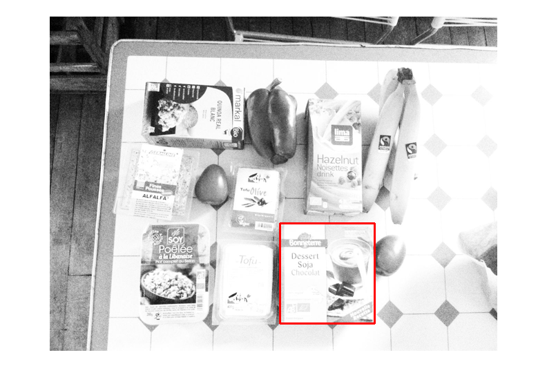

clear
clc
im = imread('/home/sajal/3-1/DIP/Assignments/assignment2/vegan-modified.jpg');
imt = imread('home/sajal/3-1/DIP/Assignments/assignment2/soy-dessert.jpg');
im = imresize(im,0.5);
imt = double(imresize(imt,0.5));
mt = mean2(double(imt));
dem1 = std2(double(imt));
imtnew = double(imt-mt);
imdiff = 0;
diffarray = [0 0];
tic
for i = 1:size(im,1)-size(imt,1)
for j = 1:size(im,2)-size(imt,2)
xtop = i;
xbottom = min(i+size(imt,1),size(im,1));
xleft = j;
xright = min(j+size(imt,2),size(im,2));
imp = im(xtop:xbottom-1,xleft:xright-1);
mp = mean2(double(imp));
impnew = double(imp - mp);
dem2 = std2(double(imp));
demfinal = (dem1*dem2);
num = impnew.*imtnew;
numfinal = sum(sum(num));
imdiff1 = numfinal/demfinal;
if(imdiff1 > imdiff)
imdiff = imdiff1;
diffarray = [j i];
end
end
end
toc
figure,imshow(im)
z = rectangle('Position',[diffarray(1),diffarray(2),size(imt,2),size(imt,1)]);
set(z,'EdgeColor',[1 0 0]);
set(z,'LineWidth',3);
Elapsed time is 78.112543 seconds.
